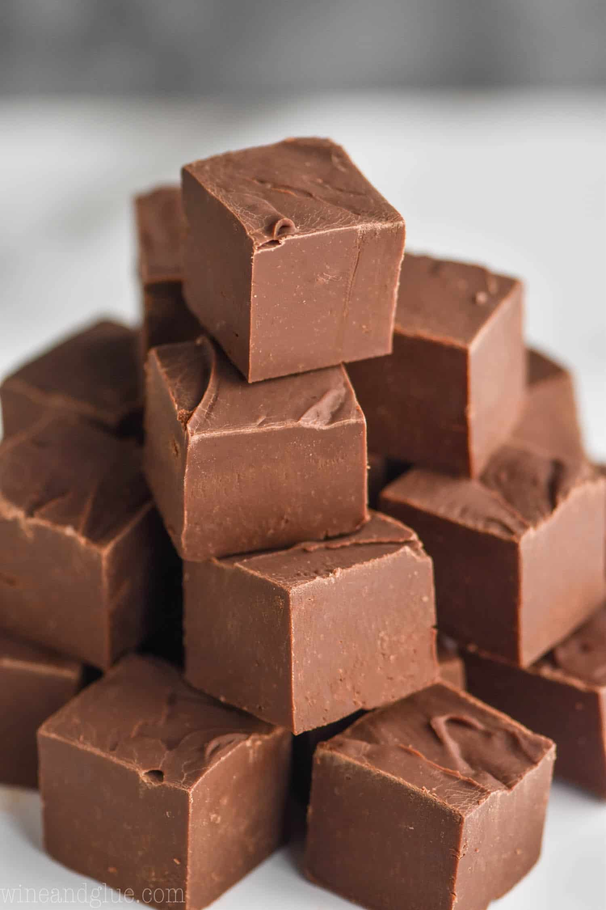

Chocolate Fudge

Description
"Fudge is a rich, creamy treat made by heating sugar, butter, and milk until it thickens into a smooth, melt-in-your-mouth texture. It comes in endless varieties, from classic chocolate to peanut butter, maple, or even rocky road. Often cut into bite-sized squares, fudge is a favorite for holidays, gifts, and sweet cravings alike." - chatGPT
"Making fudge takes patience—you heat the sugar mixture slowly, stirring constantly, until it reaches the right temperature and glossy texture. Once it cools slightly, you beat it until it thickens and loses its shine, then pour it into a pan to set. The real magic is in the timing—too soon or too late, and it won’t turn out right." - chatGPT
Ingredients
- 2 cups white sugar
- ½ cup unsweetened cocoa powder
- 1 cup whole milk
- 4 tablespoons unsalted butter, sliced and softened
- 1 teaspoon vanilla extract
Steps
- Gather ingredients
- Grease an 8-in square baking pan
- Place sugar and cocoa powder in a medium saucep\an; pour in milk and stir until blended. Set heat to medium-high and stir constantly until mixture comes to a boil
- Reduce heat to low and place a candy thermometer in the pan. Let the mixture simmer without stirring until the temperature reaches 238 degrees F (114 degrees C) when measured with a candy thermometer, about 10 minutes
- If you don't have a candy thermometer, drop a small amount of the mixture into cold water; if it forms a soft ball that flattens when removed from the water and placed on a flat surface, it's ready
- Remove from the heat. Allow to cool to 110 degrees F (43 degrees C), 50 to 70 minutes. Do not disturb fudge as it's cooling
- Add butter and vanilla to the fudge. Beat with a wooden spoon until well incorporated and fudge loses its sheen; do not under beat
- Pour fudge into prepared pan and press to flatten. Let cool at room temperature or in the refrigerator before cutting into 1-inch squares
- Enjoy!
More Recipes